冰岛旅行攻略
行前准备
地名对照（冰岛语-中文）
- Reykjavík 雷克雅未克
- Golden Circle 黄金圈
- Þingvellir National Park 辛格韦德利国家公园
- Geysir 盖歇尔间歇泉
- Gullfoss 黄金瀑布
- Jökulsárlón 冰河湖
- Mývatn 米湖
- Akureyri 阿克雷里
- Hallgrímskirkja 哈尔格林姆斯大教堂
- Sólfar 太阳航海者
- Tjörnin 托宁湖
- Höfði 霍夫蒂楼
- Seljalandsfoss 塞里雅兰瀑布
- Skógafoss 斯科加瀑布
- Sólheimajökull 索尔黑马冰川
- Mýrdalsjökull 米达尔斯冰川
- Vík 维克镇
- Skaftafell National Park 斯卡夫塔山冰川国家公园
- Eyjafjallajökull 埃亚菲亚德拉冰川
- Vatnajökull National Park 瓦特纳冰川国家公园
- Snæfellsnes 斯奈山半岛
- Kefavík International Airport 冰岛凯夫拉维克国际机场
签证办理
- [ ] 护照原件
- [ ] 近6个月内拍摄的2张2寸（3.5cm*4.5cm）白底彩色照片
- [ ] 签证申请表
- [ ] 户口本整本复印件
- [ ] 在职证明原件
由申请者的工作单位开具的英文证明信（若原件为中文，须提供英文翻译件），需使用公司正式的抬头纸并加盖公章，由负责人签名，标明出具日期并清楚包含以下信息： (1) 工作单位的地址、电话以及传真号 (2) 签字人员的姓名和职务 (3) 申请者姓名、职务、收入及工作年限 (4) 单位准假并为申请者保留职位 儿童学生提供父母/监护人的在职证明
- [ ] 银行对账单
申请者的工资卡（最佳）、退休人员请提供退休工资卡、银行活期银行卡、活期存折（信用卡除外）最近6个月的进出账单原件。学龄前儿童和在校学生请提供父母/法定监护人名下的6个月银行对账单。
- [ ] 工作单位的营业执照复印件加盖红色公章
- [ ] 保险订单
证明持有一份境外旅行医疗保险。该保险需满足以下条件： 1. 承保区域：在所有申根国家有效（中国保险在旅行目的地一栏应填写“申根区”）。 2. 保险范围：涵盖由于生病或死亡而送返回国的费用以及 急救和/或紧急住院的费用。 3. 保险额度：承保金额不低于30 000欧元 （或等值人民币）。 4. 承保时间：有效期必须覆盖整个逗留期（请您比对签证申请表29-30 项的旅行日期和保单的有效期）。只能为旅行医疗保险覆盖的时间段签发签证。 5. 时差：中国保险的有效期通常根据中国时区（北京时间）出具。鉴于中国和申根区之间有时差，有可能出现离境日不被保险完整覆盖的情况。因此，请您购买截止日期晚于您预计离开申根区日期至少一天的医疗保险。 6. 特殊人群（如老人、孕妇）须有更高的保险保障。请核对保单的具体条款是否适用特殊人群。 7. 其它：申请一年／多年多次往返申根签证，只需提交覆盖首次行程的旅行医疗保险证明。
- [ ] 行程单(须覆盖在申根区域的全部英文行程，注明停留的城市及日期。)
- [ ] 机票预订证明
- [ ] 酒店预订证明
手机卡/WIFI
https://vodafone.is_english_get-online/
机票
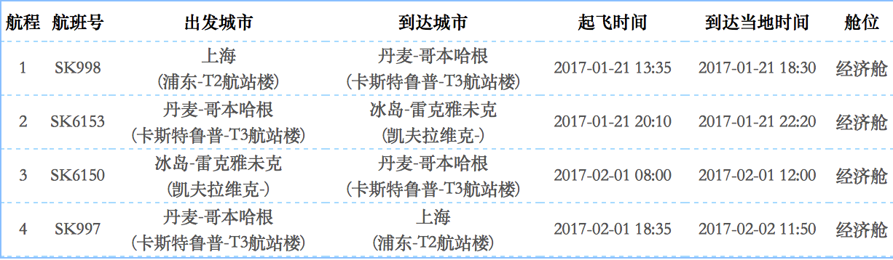
待办事项
- [ ] 龙虾餐厅行程确认，26号晚上住宿
- [ ] 31号还车及接送机问题
- [x] 冰川徒步预定 @姣姣
- [x] 订车时间修改 @落神
- [ ] 兰湖是否值得去？
- [ ] 行李托运加件
- [x] 货币兑换
- [x] 手机卡
- [ ] 物资清单
- [x] 三脚架租借 金赛腾 出租租赁意大利曼富图 三脚架 云台 套装 出租 5天150元-淘宝网
Day0（1.21）
上海-哥本哈根-雷克雅未克，当地时间22:20抵达，酒店入住
住宿： Downtown Reykjavík Apartments
Day1（1.22）
行程地图：
1.22斯奈山
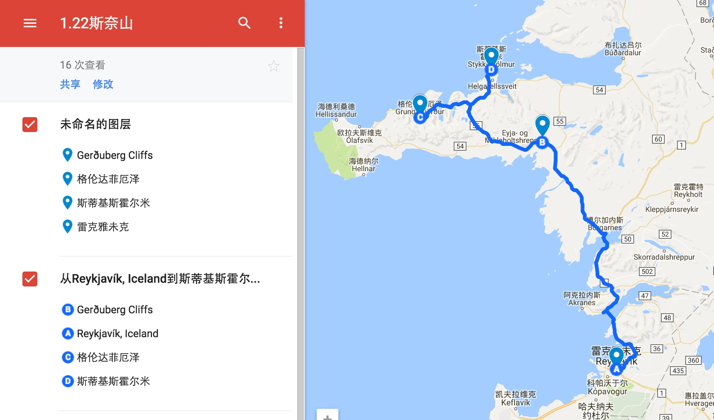
景点：
《权力的游戏》中“北墙”的原型。位于54号公路和55号公路三岔路口不远处，目前前往景点的公路虽然是石子路，但是维护得很好。这里几万块排列紧密的黑色玄武岩柱如雨后春笋一般从地里穿出，如同云峰天垂壁立千仞。
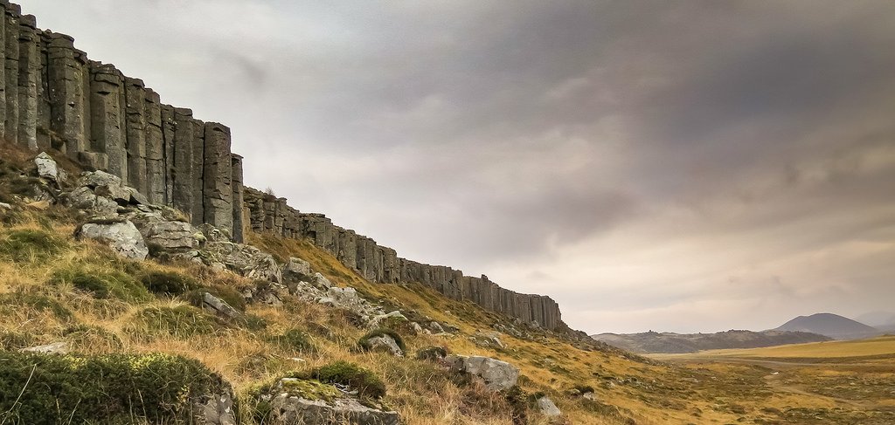
位于格伦达菲厄泽(Grundarfjörður) 镇上开车5、6分钟路程，以某个角度形似草帽闻名。山旁边还有一些小瀑布。不同角度可以拍出不同的大片，摄影师们最爱的地方。 教会山瀑布(Kirkjufellsfoss)就在教会山山脚下，有一条小道绕着瀑布，可以绕道瀑布的另外一侧，能同时拍到教会山和瀑布。
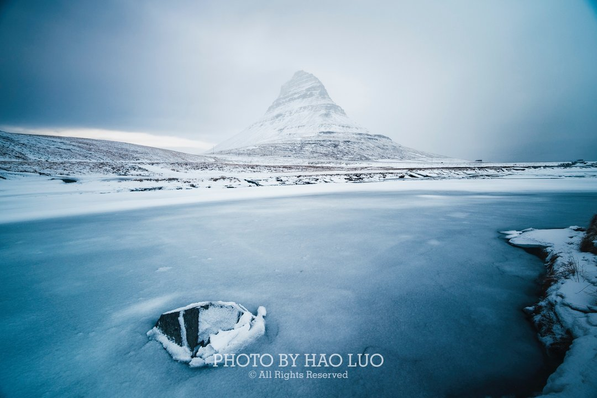
Day（1.23）
行程地图：
1.23斯奈山
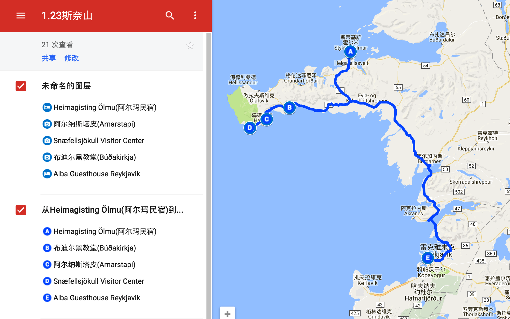
景点：
布迪尔黑教堂
Snaefellsnes 南岸的布迪尔黑教堂（Buðakirkja），被冰岛旅游信息中心称为西奈山半岛半岛必游景点之一。它是冰岛最古老的木教堂之一，最早历史记载可追溯到1703年，不过由于是纯木质结构，因此300多年来被毁与重建来来回回好几遭，如今教堂的建筑体在上世纪80年代时重新修整过。黑教堂的特殊，在于除了门窗是白色外其他通体黢黑，显得更加端庄肃穆，而教堂的旁边，就是教区的墓地。四周都是草原，矗立雪山瀑布之间有遗世独立之感，非常上镜。
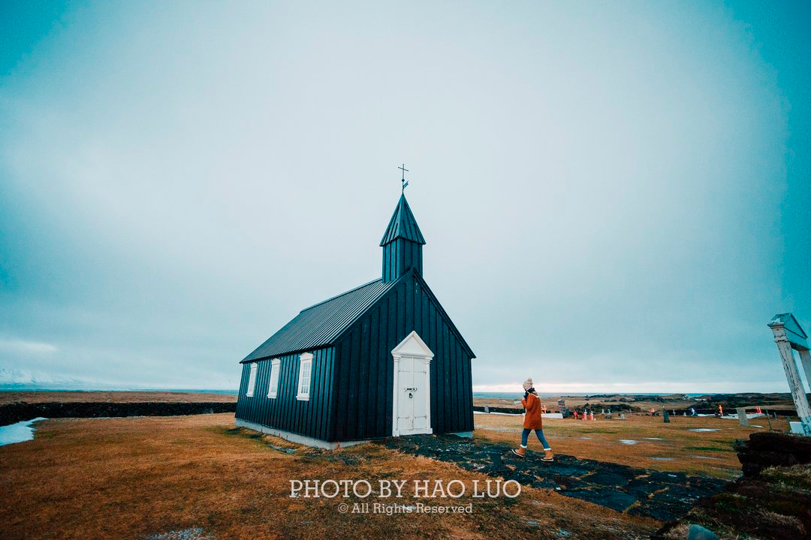
阿尔纳斯塔皮位于冰岛西部斯奈山半岛的南部，斯奈山火山的西侧，是一个在绝壁上的小渔村。几个看点：村口的『章鱼爷爷』塑像；沿海的徒步路线；还有岸边形状奇异的礁石，孤独的房子，是摄影师的最爱；
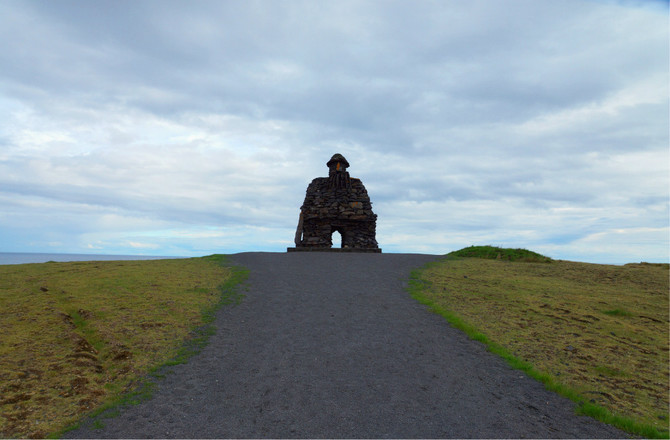
斯奈菲尔火山(Snæfellsjökull)位于冰岛雷克雅未克西北的一座半岛上，山峰覆盖有冰川。法国科幻作家儒勒·凡尔纳的《地心游记》一书中，将斯奈菲尔火山描述为通往地心的入口。
Day3（1.24）
没去过黄金圈好意思说去过冰岛？今天就要去“来冰岛不得不去的地方”。。
行程地图：
1.24 黄金圈
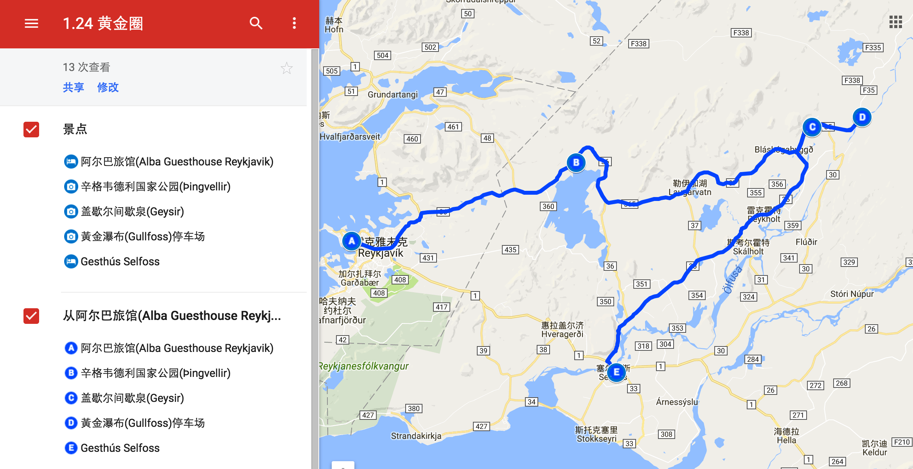
景点：
* [辛格韦德利国家公园(Þingvellir National Park)](https://goo.gl/maps/dU2Wb3JXu8J2)
位于冰岛首都雷克雅未克东北40余公里，是冰岛三大国家公园之一。 此处对冰岛有特殊的历史意义，它在930－1798年期间是冰岛议会会议所在地，这是世界上最早的议会之一。1928年成为国家公园。1944年在此宣布脱离丹麦统治，成立冰岛共和国。
盖锡尔间歇喷泉，冰岛语意思为爆泉，其最高喷水高度居冰岛所有喷泉和间歇喷泉之冠，也因此成为世界著名的间歇泉之一。可以从喷口看到整个喷发过程，尤其是喷发前，沸腾的水喷出而形成碗状，然后中间的水柱变成蒸气直上空中约20公尺高处。盖锡尔旁边还有斯特罗库尔间歇泉，约每隔八分钟左右连续喷射二、三次，水柱高达二十米，十分壮观。大间歇喷泉是一个直径约18米的圆池，水池中央的泉眼为一直径10多厘米的“洞穴”，沿内水温高达百度以上。每次泉水喷发之际，只听洞内隆隆作响，渐渐地，响声越来越大，而且沸水也随之升涌，最后冲出洞口，向高空喷射，从中间水柱变成蒸汽直冲上天空约20米高，又随即化作琼珠碎玉落下。每次喷发过程大约持续1～2分钟，然后渐归平息。这一过程周而复始，不断反复，十分壮美。
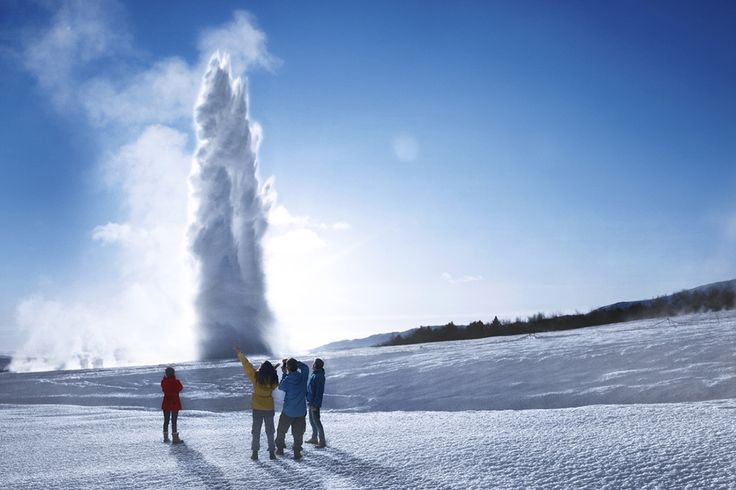
- 黄金瀑布(Gullfoss)
黄金瀑布(Gullfoss)是冰岛最壮观的瀑布之一，总高度32米，最长下降21米，是冰岛最受欢迎的旅游景点之一，属于雷克雅未克周边黄金三角线的一部分。
住宿： Gesthus Selfoss杰萨斯赛尔福斯酒店( 导航)
Day4（1.25）
游览冰岛南部，行程主要是冰岛两个著名的瀑布(为毛冰岛有那么多瀑布。。)
行程地图：
1.25冰岛南部
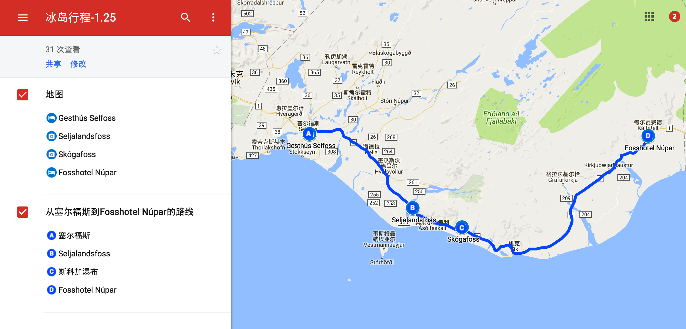
景点：
-
塞里雅兰瀑布(Seljalandsfoss)是冰岛西南部一座垂直高度60米的瀑布，为冰岛最漂亮的瀑布之一。坐落于思科阿缶丝瀑布和塞尔福斯之间，斯科加尔以西约30公里处的塞里雅兰河。
到达方式：自驾从雷克雅未克沿一号公路向东南行驶至塞里雅兰河，过桥后左拐进入249号道路，不远即是。距离雷克雅未克大约1.5小时车程。
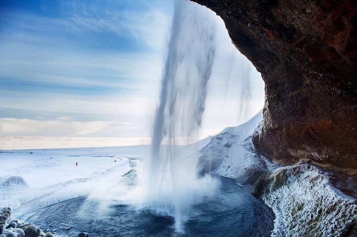 -
树林瀑布(Skógafoss)在冰岛南部，高60米，是冰岛最大的瀑布之一。
到达方式：沿着1号公路向东行驶，30km公里后，到达Skógafoss瀑布。
Day5（1.26）
冰川徒步，探索《星际穿越》中的外星世界！
景点：
* [瓦特纳冰川国家公园(Vatna)](http://place.qyer.com/poi/V2EJZFFuBzFTY1I-/)
住宿：
Seljavellir Guesthouse瑟尔杰维利酒店( 导航)
年夜饭：
为了庆祝春节来顿好的，去 龙虾餐厅点一份龙虾大餐！
Day6（1.27）
冰洞(当地跟团tour)
景点：
* [冰洞(Ice Cave)](http://place.qyer.com/poi/V2YJY1FnBzZTbVI3/)
Day7（1.28）
杀回维克小镇，补上之前赶路没有去成的黑沙滩和飞机残骸
景点：
飞机残骸(Solheimasandur Plane Wreck)
黑沙滩的飞机残骸，1973年11月24号，一架美国海军飞机(C-47)被逼降落于冰岛南部Sólheimasandur’s， 机组人员全部生还，但残骸却一直留在了这里。从公路旁的入口处到残害晚饭大概需要2小时的徒步路程
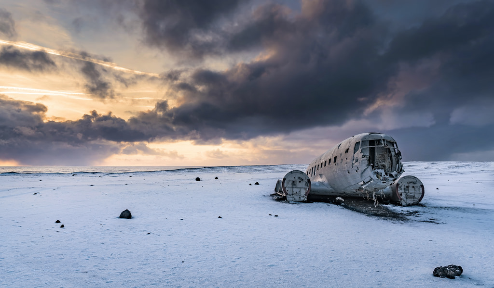-
1991年，美国《岛屿杂志(Islands Magazine)》将维克小镇的黑沙滩列为世界十大最美海滩之一。冰岛有许多活火山，黑沙滩的“沙子”便是来自于火山熔岩。经过海风与海浪的雕琢，黑色的玄武岩变成了黑沙。冰岛的几处黑沙滩中，属维克最摄人心魄。
Day8（1.29）
返回雷克雅未克，途中在此游览两个瀑布
景点：
* [塞里雅兰瀑布(Seljalandsfoss)](https://goo.gl/maps/Sps3UfaaMoB2)
* [斯科加瀑布(Skógafoss)](https://goo.gl/maps/zWzkLXjcSLL2)
住宿：
Captain Reykjavik Guesthouse雷克雅未克队长旅馆
Day9 （1.30）
雷克雅未克City Walk，不再赶路，享受悠闲的一天。
景点：
* [哈尔格林姆斯大教堂](http://place.qyer.com/poi/V2IJYFFuBzZTZw/)
* [托宁湖](http://place.qyer.com/poi/V2IJYFFhBz9TZw/)
* [太阳航海者](http://place.qyer.com/poi/V2UJYlFuBzNTY1I5/)
* [雷克雅未克艺术博物馆](http://place.qyer.com/poi/V2IJYFFhBz9TYw/)
* [冰岛国家博物馆](http://place.qyer.com/poi/V2IJYFFhBz9TbQ/)
* [冰岛小丁丁博物馆](http://place.qyer.com/poi/V2YJY1FnBzBTYlI2/)
住宿：
Captain Reykjavik Guesthouse雷克雅未克队长旅馆
Day10 （1.31）
景点：
雷克雅未克
住宿：
Guesthouse Alex by Keflavik Airport亚历克斯凯夫拉维克机场旅馆
#旅游